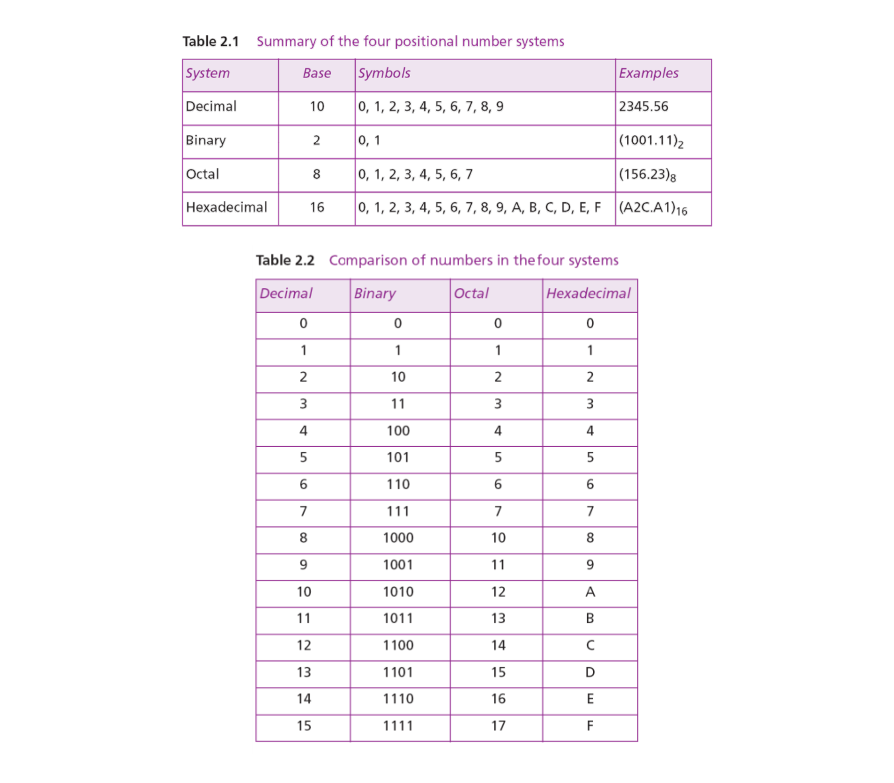

Portfolio
PORTFOLIO #1: Computing
Computer Science as Discipline
Definition
- A new species of non-physical science, distinct from social science or mathematics but rather a sui generis (“of its own kind”) among the sciences (Hartmanis, 1993, as cited in Rapaport, 2017)
- It is “to capture the messy complexity of the natural world and express it algorithmically” (Nakra, quoted in Davidson, 2006)
- A study of discrete behavior exhibited by interacting information-processing agents like computers or humans differentiates it from physics (Baeten and Sangiorgi, 2014). Hence, the demarcation of computer science involves discrete mathematics (algebra, logic), interactions (between agents or with the world), and information (processing and transmission)
Subfields
12 distinct subfields under the discipline (Denning, 1999):
- Algorithms & Data Structures
- Programming Languages
- Architecture
- Operating Systems and Networks
- Software Engineering
- Databases & Information Retrieval
- Artificial Intelligence & Robotics
- Graphics
- Human-Computer Interaction
- Computational Science
- Organizational Informatics
- Bioinformatics
Application
It has a wide range of applications such as simulating climate change and diseases, creating art through graphics rendering, and developing human-like interfaces with AI and machine learning (Belford and Tucker, 2024).
5 Computing Disciplines and Majors
Computer Engineering (CE)
- Merges electrical engineering and computer science, focusing on hardware-software interactions. Concerned with the design and maintenance of computer-based systems, from PCs to embedded systems in vehicles, appliances, and communication networks (University of Houston Cullen College of Engineering)

Computer Science (CS)
- A young discipline that encompasses (1) theories to understand computing devices, programs, and systems; (2) experimentation to create and test concepts; (3) design methodology, algorithms, and tools for practical realization; and (4) analysis to ensure requirements are met (Denning et al., 1989)

Information Systems (IS)
- An integration of business and computing, compromising a set of interrelated components that collect, manipulate, store, and disseminate data to achieve organizational objectives like profit growth and customer service enhancement through a feedback mechanism (Reynolds and Stair, 2011)

Information Technology (IT)
- Focuses on deploying and supporting computing infrastructure in organizations, ensuring reliability and availability. It emphasizes integrating hardware, software, and communication networks into technological solutions rather than creating new products (Ramos-Torres, 2018)

Software Engineering (SE)
- An engineering discipline that covers all aspects of professional software production over individual programming (Sommerville, 2011). It involves techniques for program specification, design, and evolution

On the job
(Connolly, Miller, and Uzoka, 2017)
| CE | CS | IS | IT | SE |
|---|---|---|---|---|
| Computer Engineers develop hardware to create communication systems and software-controlled devices such as smartphones and gaming devices. |
Computer Scientists research, design, and create innovative software solutions by utilizing mathematical and theoretical knowledge. |
Information Systems Specialists blend business and technology expertise to leverage technology for a competitive edge and manage projects or teams of software developers. |
IT Professionals integrate hardware and software to install networks, implement security measures, design web pages, develop multimedia resources, set up communication components, and oversee the technology lifecycle within organizations. |
Software Engineers develop maintainable, reliable, and efficient software systems that meet customer requirements. They work closely with customers to assess needs and manage large, complex, and safety-critical projects. |
Analysis/Reaction
Showcasing the introduction of the course, Introduction to Computing (ITC) allowed me to recall, elaborate, and evaluate my prior knowledge of what the course could offer as part of the Bachelor of Science in Computer Science (BSCS) curriculum. The first five (5) topics are entitled “Computer Science as a Discipline,” “Computing Disciplines and Major,” “IT People and Careers,” “Information Systems: Concepts and Definitions,” and “Computers and Their Uses,” respectively. The main objective was to learn and differentiate the components of each topic, ensuring a comprehensive understanding over time as the knowledge gained in this course will also be useful in the other CIS courses.
When these topics were presented, the first description that I thought of was the purpose of computing. Courses in Secondary school touched on computers to relate this to various subjects such as science, computer, empowerment technologies, and media and information literacy. The term translates to a large scope of interconnected systems that lead to a global connection that drives the modern world. As most of my previous instructors mentioned, computing encompasses a broad range of applications that currently impact every aspect of our lives. Accordingly, this was not new to me, although this time around, the course ITC is dealing with the topic properly and not with the limit of its relation to other subject matter. Before, the practice I did to guide my learning was to self-evaluate with the help of materials recommended or provided by instructors. A part of it was to relate it to what I can observe in the present time. I encountered a few misconceptions on the topic, which is computing only being centered on mathematics. Its scale was also not something I could estimate, given that it pushes the boundaries of human knowledge to everyday conveniences like shopping and communication, serving as a backbone of innovation.
The class discussion on the 27th and 29th of August 2024 was informative as the PowerPoint (PPT) presentation was brief and concise along with the relatable additional information provided by Ms. Navarrete. When making the portfolio, it surely tested my understanding of the different disciplines of computing given that most intersect with some computing topics. Fortunately, I managed to clear things up by researching and reading the notes provided to aid me in understanding the topic better and also prepare me for an upcoming quiz. After completing the task, I developed a deeper appreciation for the diversity within the field of computing. I gained insight into the origins of each computing discipline and how they contribute unique solutions to various problems through computational methods. Computing transforms not just me but all its practitioners in the way we learn in school, do our jobs, and connect with the world. It fosters a mindset of problem-solving and innovation, encouraging us to think critically and creatively. Through computing, we not only gain technical skills but also develop a deeper understanding of collaboration, ethics, and the ever-evolving landscape of human knowledge as it opens a myriad of possibilities.
References
- Baeten, J. C.M., & Sangiorgi, D. (2014). Concurrency theory: A historical perspective on coinduction and process calculi. Handbook of the history of logic, 9, 399-442. https://doi.org/10.1016/B978-0-444-51624-4.50009-5
- Belford, G. G., & Tucker, A. (2024). Computer science. In Encyclopedia Britannica. https://www.britannica.com/science/computer-science
- Connolly, R., Miller, J., & Uzoka, F. (2017). Computing disciplines. CERIC. https://ceric.ca/wp-content/uploads/2018/06/Computing-Disciplines-A-Quick-Guide-for-Prospective-Students-and-Career-Advisors.pdf
- Cullen College of Engineering. (n.d.). Bachelor of science in computer engineering. University of Houston. https://www.egr.uh.edu/sites/ccoe.egr.uh.edu/files/departments/computer.pdf
- Davidson, J. (2006, August 13). Measure for measure: Exploring the mysteries of conducting. The New Yorker, 60–69. https://www.newyorker.com/magazine/2006/08/21/measure-for-measure-6
- Denning, P. J. et al. (1989). Computing as a discipline (2). ACM Education Board. https://doi.org/10.1109/2.19833
- Denning, P. J. (1999). Computer science: the discipline. 2000 Edition of Encyclopedia of Computer Science. https://denninginstitute.com/pjd/PUBS/ENC/cs99.pdf
- Ekstrom, J. K., & Lunt, B. M. (2008). What distinguishes each of the major computing disciplines? Latin American and Caribbean Conference for Engineering and Technology. https://www.laccei.org/LACCEI2008-Honduras/Papers/CD092_Lunt.pdf
- Ramos-Torres, A. I. (2018). Main computing disciplines: characteristics, similarities, and differences. Rock Solid. https://cdn2.hubspot.net/hubfs/4236341/mjtw/files/Branded-MainComputingDisciplines(Characteristics-Similarities-and-Differences)ByARamosDec2018.pdf
- Rapaport, W. J. (2017). What is computer science? [Master's thesis]. https://cse.buffalo.edu/~rapaport/Papers/whatiscsapa-20170127-edited.pdf
- Reynolds, G. W., & Stair, R. M. (2011). Fundamentals of information systems (6th ed.). Cengage Learning. http://librodigital.sangregorio.edu.ec/librosusgp/06923.pdf
- Sommerville, I. (2011). Software engineering (9th ed.). Addison-Wesley. https://web2.qatar.cmu.edu/cs/17313/Software-Engineering-9th-Edition-by-Ian-Sommerville.pdf
PORTFOLIO #2: Data and Information
Data and Information
What is data?
- Data is commonly considered 'raw' or unorganized data, a collection of text, numbers, and symbols without meaning (Cambridge International Examinations, 2015). It needs to be processed or placed within a specific context
- Representation of facts, concepts, or instructions in a manner suitable for communication, interpretation, or processing by humans or by automatic means (Ross et al., 2022)
What is information?
- When data is processed, typically by a computer, it transforms into information. This information consists of facts that give context and significance to the processed data, making it a meaningful and useful context (Cambridge International Examinations, 2015)
- An organized collection of data that can be understood (Laudon, 1996)
How does data become information?
- The terms "data" and "information" are often used interchangeably, but data is raw material while information is data that has been processed into a meaningful context (O'Brien, 1995)
- The Basic Functions of a Computer (UNESCO-Nigeria Technical & Vocational Education, 2008)
- Processing involves various actions like addition, subtraction, comparison, sorting, rearrangement, etc. (Afe Babalola University). These processes are essential for making information useful and meaningful. Put simply, information can be described as the specific state that data achieves after going through a sequence of processing steps
- When we represent information in an equation, it appears as follows:
.png)
| Data + Meaning = Information (Cambridge International Examinations, 2015) |
Information Systems
| An information system is an integrated and collaborative collection of software-driven information technologies that aid in achieving individual, group, organizational, or societal objectives (Global Text Project, 2007). | It applies Information Technology (IT) to collect, store, process, maintain, use, share, disseminate, dispose of, display, or transmit information, and provide a feedback mechanism to meet an objective (Committee on National Security Systems, 2006). | The feedback mechanism aids organizations in reaching their objectives by increasing profits, enhancing customer service (Reynolds & Stair, 2008), and facilitating decision-making and control within the organization (Laudon, 2012). |
The "Leavitt's diamond: a socio-technical view of IS” shows the information systems of an organization, organized based on four key elements (Leavitt, 1960).

- Technology: Hardware, software, and telecommunications equipment used to capture, process, store and disseminate information
- Task: Activities necessary for the production of a good or service
- Person: The managers who define the goals of the system, the users, and the developers
- Structure: Hierarchical structures, relationships, and systems for evaluating people
What is the role of IS in Business today?
The objective of information systems is to assist companies with their information needs (Wognum et al., 2004)
- Enterprise Resource Planning (ERP) systems have enhanced business efficiency by granting easy access to necessary information (Al-Mashari et al., 2003, cited in Jern, 2009)
- PDM systems can facilitate information sharing (Smith, 2004, cited in Jern, 2009)
Information systems will inevitably transform the working methods within an organization (Davenport, 1998)
Different Types of Support Systems in Information Systems
Categorizing the different types of information systems based on their roles at different organizational structure levels using a vertical approach.

| Transaction Processing System (TPS) |
|---|
|
| Management Information System (MIS) |
|---|
|
According to Singh (n.d.), MIS is …
|
| Decision Support System (DSS) |
|---|
|
According to Ali (2021), DSS is …
|
| Executive Information System (EIS) |
|---|
|
Analysis/Reaction
The second (2nd) portfolio of the course, "Introduction to Computing" (ITC), focuses on the discipline of Information Systems (IS). The term refers to the integrated and collaborative collection of software-driven information technologies that aid in achieving individual, group, organizational, or societal objectives (Global Text Project, 2007). It applies another discipline of computing which is Information Technology (IT) to collect, store, process, maintain, use, share, disseminate, dispose, display, or transmit information. In my prior knowledge before researching for the portfolio, I knew IS as a social science combined with computing to disseminate information properly, following ethics and privacy. However, I face confusion when differentiating between IT and IS.
The lecture on the topic occurred on August 29, 2024, Thursday and started at 3:00 PM via face-to-face class. The resource person was Ms. Navarrete who discussed “Information Systems: Concepts and Definitions,” joined by students from BS CS, IS, and IT. The topic was not completely new to me since a few components were shared during the first week of orientation. Anyhow, the lecture and portfolio-making provided me with a new set of information especially, on the different types of support systems and the roles set for each. For this topic, the materials were enough for me to understand the overview of what IS is all about that would prepare me for more advanced topics in the following meetings. Moreover, I expected the topic to be about data and information, and how we process them to attain a meaningful and significant context.
As the objectives for the lecture were explained, I am able to differentiate data from information, define IS based on its technology, task, person, and structure, and categorize the support systems of IS. It is complex and interrelated to other disciplines in computing that contributed to a global interaction. By the end of the lecture, I felt equipped with a more nuanced perspective of IS, recognizing it not merely as a technical tool, but as a dynamic field that bridges multiple domains, driving advancements and facilitating global connectivity.
References
- Afe Babalola University. (n.d.). Data and information. In Afe Babalola University. Retrieved September 6, 2024, from https://portal.abuad.edu.ng/lecturer/documents/1554208765DATA_AND_INFORMATION.pdf
- Ali, R. (2021). Introduction to Computer & ICT (2nd ed., Vols. 2021–22). https://www.studypool.com/documents/9296228/introduction-to-computer-and-ict-by-dr-rehman-ali-pdf-by-abdur-rehman-and-dani-compressed-1
- Al-Mamary, Y. H., Shamsuddin, A., & Aziati, N. (2014). The Role of Different Types of Information Systems in Business Organizations: A review. International Journal of Research, 1(7), ISSN 2348-684. https://www.researchgate.net/publication/275026408_The_Role_of_Different_Types_of_Information_Systems_In_Business_Organizations_A_Review
- Al-Tuhaifi, M. S. (2024). Information System Types at Various Management Levels in Contemporary Organizations: An Overview. International Journal of Research, 11(2), 395–404. https://www.researchgate.net/publication/378902708_Information_System_Types_at_Various_Management_Levels_in_Contemporary_Organizations_An_Overview
- Burgin, M. (2005). Is information some kind of data? In Foundations of Information Science (MSC 2000: 94A15). University of California, Los Angeles. https://www.mdpi.org/fis2005/F.08.paper.pdf
- Cambridge International Examinations. (2015). Cambridge International AS & A level Information Technology. https://www.cambridgeinternational.org/images/285017-data-information-and-knowledge.pdf
- Committee on national security systems. (2006). National information assurance glossary. https://rmf.org/wp-content/uploads/2017/10/CNSSI-4009.pdf
- Davenport, T. H. (2014, August 1). Putting the Enterprise into the Enterprise System. Harvard Business Review. https://hbr.org/1998/07/putting-the-enterprise-into-the-enterprise-system
- Global Text Project. (2007). Information systems (R. T. Watson, Ed.). Creative Commons Attribution 3.0 License. https://www.uky.edu/~gmswan3/777/IS_Book.pdf
- Jern, A. (2009). On introducing information systems in organizations. www.academia.edu. https://www.academia.edu/6138896/On_Introducing_Information_Systems_in_Organizations
- Laudon, K. C., & Laudon, J. P. (2014). Management Information Systems (13th ed.). Pearson. https://repository.dinus.ac.id/docs/ajar/Kenneth_C.Laudon,Jane_P_.Laudon_-_Management_Information_Sysrem_13th_Edition_.pdf
- O’Brien, J. A. (1993). The Nature of computers: with productivity software guides (1st ed.). Fort Worth: Dryden Press. https://archive.org/details/natureofcomputer0000obri/page/n10/mode/1up
- O’Brien, J. A., & Marakas, G. M. (2007). Management Information Systems (7th ed.). Tata Mc-Graw Hills. https://dias.ac.in/wp-content/uploads/2020/06/102-112-Pages-of-DTR-8th-issue.pdf
- Patterson, A. (2005). Information systems - using information. Learning and Teaching Scotland. https://www.sciepub.com/reference/68120
- Ross, R., McEvilley, M., & Winstead, M. (2022). Engineering trustworthy secure systems. NIST Special Publication (SP), NIST SP 800-160v1r1. https://doi.org/10.6028/NIST.SP.800-160v1r1
- Singh, E. A. (n.d.). Type of system. University of Lucknow. Retrieved September 6, 2024, from https://udrc.lkouniv.ac.in/Content/DepartmentContent/SM_1b57cbfb-ab10-4233-bfaf-cb6c7bc8e453_58.pdf
- Stair, R. M., & Reynolds, G. (2007). Fundamentals of Business Information Systems. Google Books. Thomson Learning. https://books.google.com.ph/books/about/Fundamentals_of_Business_Information_Sys.html?id=oR9kPgAACAAJ&redir_esc=y
- UNESCO-Nigeria Technical & Vocational Education. (2008). Introduction to computing. Wordpress. https://pcgicks.wordpress.com/wp-content/uploads/2015/02/com-101-introduction-to-computing-theory.pdf
- Wognum, P. M., Krabbendam, J. J., Buhl, H., Ma, X., & Kenett, R. (2004). Improving enterprise system support-a case-based approach. Advanced Engineering Informatics, 18(4), 241. https://dl.acm.org/doi/abs/10.1016/j.aei.2005.01.007
- Zemmouchi-Ghomari, L. (2021). Basic concepts of information Systems. Contemporary Issues in Information Systems - a Global Perspective. https://www.researchgate.net/publication/353381296_the_basic_concepts_of_information_systems
PORTFOLIO #3: Number Systems
What are Number Systems?
- A number system is a structured method for representing, writing, and expressing numerical values across different dimensions and calculations (Wahed, 2022)
- Every value or number that is inputted, stored, or retrieved from the computer system's memory is associated with a defined number system (Olajide, 2017)
The two main types of number systems are (Sinha & Sinha, 2017):
| Positional Number Systems | Non-positional Number Systems | |
|---|---|---|
|
|
- Representing numbers in different number systems typically requires indicating the base as a subscript (Daffodil International University, 2019)
- Number systems have evolved in the past (Esmay, 2018). Will they do so again? Many individuals now advocate for using groups of 12 instead of 10. Nevertheless, one fact remains certain: regardless of how numbers are represented, they will always be essential to us
Types of Number Systems
There are four types of Positional Number Systems (Wahed, 2022):
- Decimal Number System
- Binary Number System
- Octal Number System
- Hexadecimal Number System
| Decimal Number System |
|---|
|
| Binary Number System |
|---|
|
(a) Conversion of binary to decimal
 Conversion of binary to decimal.png)
(b) Conversion of decimal to binary
 Conversion of decimal to binary.png)
| OctalNumber System |
|---|
|
(a) Conversion of octal to decimal
 Conversion of octal to decimal.png)
(b) Conversion of decimal to octal
 Conversion of decimal to octal.png)
(c) Converting from binary to octal
 Converting from binary to octal.png)
(d) Converting from octal to binary
 Converting from octal to binary.png)
| Hexadecimal Number System | |
|---|---|
|
(a) Converting from hexadecimal to decimal
 Converting from hexadecimal to decimal.png)
(b) Converting from decimal to hexadecimal
 Converting from decimal to hexadecimal.png)
(c) Converting from binary to hexadecimal
 Converting from binary to hexadecimal.png)
(d) Converting from hexadecimal to binary
 Converting from hexadecimal to binary.png)
Summary of the Four Positional Number Systems:
| (Forouzan & Mosharraf, 2008) |  |
|---|
There are various techniques available for converting numbers from one base to another (Rahman etal., 2017).Theseare:
|
What are the uses/significance of each number system?
Uses/significance ofeach numbersystem
| (Mehrotra, 2021) |
|---|
Binary Number System
- It is ideal for coding purposes involving the two-state nature of components
- Easy to code and straightforward to implement
- Simple at work
- Processing is faster
- Its importance to information theory and computer technology derives mainly from the compact and reliable manner in which data can be represented in electromechanical devices with two states–such as “on-off,” “open-close,” or “go-no go”
- Ideal for reliable compact digital storage
All four number systems
- Find widespread usage in digital circuitry. They act as a shortcut substitute for large and complex binary numbers
| (Jones, n.d.) |
|---|
Binary Number System
- The computer uses the binary number system for the internal representation of everything since that is the most efficient system for processing and storage
Decimal Number System
- Uses the decimal system for input/output of numeric values, since I/O is where the computer interacts with people, and people work best with decimal
Hexadecimal Number System
- Uses hexadecimal when printing out or displaying long strings of binary numbers for people to read. For example, if a program crashes, the computer might generate a "core dump," which is a display of the contents of memory at the time of the crash. This dump is printed in hex to make it easier for the programmer to read
| (Petruzella, 2010) |
|---|
Decimal Number System
- most common to humans
Binary Number System
- With digital circuits, it is easy to distinguish between two voltage levels, which can be related to the binary digits 1 and 0
- Can be applied quite easily to PLCs and computer systems
Octal Number System
- Used because 8 data bits make up a byte of information that can be addressed
- A convenient means of handling large binary numbers
- Converts easily to binary equivalents
Hexadecimal Number System
- Used in programmable controllers because a word of data consists of 16 data bits or two 8-bit bytes
- Allows the status of a large number of binary bits to be represented in a small space
- Easily be converted to binary numbers
| (Rabiee, 2023) |
|---|
Decimal Number System
- This number system was invented because humans used their 10 fingers to keep track of their counting
Octal Number System
- Used to display the memory maps and carry out the math instructions in smaller PLCs
Hexadecimal Number System
- Used to display the PLC memory map and to carry out the math instructions
| (Mausam, n.d.) |
|---|
Octal Number System
- Highly inconvenient to handle long strings of binary numbers
- Used for entering the binary data and displaying certain information
Analysis/Reaction
The third (3) portfolio on Number Systems occurred on September 3-5, 2024, Tuesday-Thursday and started at 3:00 PM via face-to-face class. The resource person was Ms. Navarrete who lectured on “Number Systems and Number-Base Conversion,” joined by group 10 of CIS 1102N. As a course in line with the program, I am new to the topic and have only encountered a hexadecimal value once during my research for the Programming I class. The Introduction to Computing (ITC) shed light on the objectives and significance of the topic.
From this assignment, which is to research and answer the following questions with valid sources, I found that Number Systems are foundational to both theoretical and practical sub-areas of computing and mathematics. In connection to the previous lesson on the brief history of computing, the figures who have contributed to the discipline have backgrounds in mathematics or research that they applied to their findings or innovations. So, the topic provides the essential ways to represent and process data in various methods in order for it to be a piece of information. As a student majoring in computer science, it is important for me to be able to understand and differentiate the number systems as each has its unique applications and advantages depending on the context in which they are used. It may be for a computational task, digital communication, or human interaction.
To come to the point, each number system has its own significance and distinct uses that allow for more efficient problem-solving in both daily tasks and complex technological environments. Each type forms a comprehensive structure that caters to the variety of needs for processing and representation of data. Its relevance in today’s technology signifies its role in advancing the digital world. At its core, the significance of these number systems extends beyond academic interest, it serves as the backbone of modern technology and innovation. The two are necessary as the world progresses in creating increasingly advanced digital tools, and understanding and utilizing these systems leads to their timeless relevance.
References
- Bird, J. (2017). Higher Engineering Mathematics (8th ed.). Routledge. https://www.hatecs.ir/ebooks/John%20Bird%20-%20Higher%20Engineering%20Mathematics%20(2017,%20Routledge).pdf
- Chiang, T. C. (2010). Number Systems. In University of Babylon. https://www.uobabylon.edu.iq/eprints/publication_3_8400_6187.pdf
- Daffodil International University. (2019). Number systems and conversions. In DIU Blended Learning Center. https://elearn.daffodilvarsity.edu.bd/pluginfile.php/834553/mod_label/intro/Wk.%203%2C%204%20%28a%29.%20Number%20Systems%20and%20Conversions.pdf
- Esmay, G. (2018). The history of number systems. Google Books. https://www.google.com.ph/books/edition/The_History_of_Number_Systems_Place_Valu/-qt5DwAAQBAJ?hl=en&gbpv=1&dq=number+systems&printsec=frontcover
- Forouzan, B. A., & Mosharraf, F. (2008). Foundations of Computer Science (2nd ed.). Thomson Learning. https://gimmenotes.co.za/wp-content/uploads/2018/12/COS1521-foundations_of_computer_science_-chapter_2.pdf
- Hossain, A., Kaiser, M. S., Rahman, M. A., & Rahman, M. L. (2016). Computer Fundamentals and ICT. DIU Press. https://www.researchgate.net/publication/311451823_Computer_Fundamentals_and_ICT/citations
- Jones, J. A. (n.d.). Base Systems. In The City University of New York. Retrieved September 13, 2024, from https://www.sci.brooklyn.cuny.edu/~jones/cisc1110/basesystems.pdf
- Mausam, M. (n.d.). Number systems and codes Electronics. In L.S.College, Muzaffarpur. Retrieved September 13, 2024, from http://www.lscollege.ac.in/sites/default/files/e-content/Number%20Systems%20and%20Codes%20-%20Hexadecimal%20Number%20System%201.pdf
- Mehrotra, D. (2021). Computer Science. In Google Books (9th ed.). S Chand And Company Limited. https://books.google.com.ph/books?id=bLgyEAAAQBAJ&newbks=0&printsec=frontcover&pg=PA1&dq=significance+of+binary+octal+decimal+hexadecimal+number+system+pdf&hl=en&source=newbks_fb&redir_esc=y#v=onepage&q=significance%20of%20binary%20octal%20decimal%20hexadecimal%20number+system+pdf&f=false
- Olajide, A. O. (2017). Computer number system. In ResearchGate. https://doi.org/10.13140/RG.2.2.18838.04167
- Petruzella, F. D. (2010). Programmable Logic Controllers (4th ed.). Non Basic Stock Line. https://sanamrao123.wordpress.com/wp-content/uploads/2015/04/ch-3.pdf
- Rabiee, M. (2023). Programmable Logic Controllers: hardware and programming (5th ed.). G-W Digital Solutions. https://www.g-w.com/assets/files/pdf/sampchap/9781649259868_Ch03.pdf
- Sinha, P. K., & Sinha, P. (2017). Computer Fundamentals (6th ed.). Weebly. https://mycsvtunotes.weebly.com/uploads/1/0/1/7/10174835/computer_fundamental_complete-i.pdf
- Wahed, A. (2022). Number systems and their operations. Google Books. https://www.google.com.ph/books/edition/NUMBER_SYSTEMS_AND_THEIR_OPERATIONS/rNOIEAAAQBAJ?hl=en&gbpv=1&dq=number+systems&printsec=frontcover
- Weiss, S. (2006). Binary Number System. In The City University of New York. https://www.cs.hunter.cuny.edu/~sweiss/resources/BinaryNumbers.pdf
PORTFOLIO #4: Computer Hardware and Software: Their Implementation in the different institutions in the community
Computer Hardware
is the tangible component of a computer system, allowing users to touch and interact with it (Englander & Wong, 2021).

- It processes data by executing instructions, storing, and transferring information between input and output devices that make the system and the information accessible to the users.
- The CPUs, memory, and all the input, output, and storage devices form the hardware part of a computer system that provides the physical mechanisms that enable data manipulation, processing, and electronic control of various input, output, and storage components.
| The Central Processing Unit (CPU), or “cores” is designed to process input data by continuously performing the fetch-decode-execute cycle to produce an output result (Waltonstaffs, 2018). It is the central point for all sorting, searching, calculating, and decision-making processes. The architecture and execution of program instructions by the CPU are referred to as "von Neumann architecture". |
-
The fetch-decode-execute cycle

Every CPU instruction is retrieved from memory (PG Online Limited, 2021). After being fetched, the Control Unit decodes it to determine the appropriate action. Following this, the instruction is executed. Each operation within the fetch-decode-execute cycle is governed by a 'tick' or cycle of the CPU clock.
-
Von Neumann architecture

John von Neumann was the pioneer behind the stored program computer (PG Online Limited, 2021). In his architecture, the programs and the data utilized are kept in the same memory.
Conceptually, a CPU is a composition of three primary subunits (Waller, 2020):
-
Arithmetic/Logic Unit (ALU)
where arithmetic (addition, subtraction, multiplication, and division) and Boolean logical (logical tests and comparisons) calculations are performed.
-
Control Unit (CU)
Manages instruction processing and data movement within the CPU. It coordinates computer actions and controls the fetch-execute cycle by sending control signals to the ALU, registers, and other components like input and output devices.
The main elements of the CU are the clock and the decoder:- The clock manages the speed and timing of signals and computer functions by sending pulses to components for coordination. Timing is regulated by a vibrating quartz crystal.
- The decoder interprets program instructions from memory, determines the necessary actions, and sends control signals to other components to execute them.
-
Registers
are storage areas located within the CPU. They provide faster access than random access memory. Their primary role is to store instructions and data that are actively utilized during the fetch-execute cycle.
Some registers have specific functions, while others are general-purpose for quick data storage. Specific-function registers include:- the accumulator (A or ACC)
- the program counter (PC)
- the memory address register (MAR),
- the memory data register (MDR) or memory buffer register (MBR)
| Memory holds programs and data during processing by storing data, instructions, and output results (AL-Bermani). It can serve short-term, immediate, or long-term storage needs. Different types of memory organized in a Hierarchy (Al-Obaidi, 2024) are available for computer use such as:
As one progresses down the hierarchy, the following occur: 

|
Inboard Memory (Internal Memory)
is used by the CPU to perform computing tasks (AL-Bermani).
The key features of internal memory are:
- Limited storage capacity.
- Temporary storage.
- Fast access.
- High cost.
It constitutes the following:
- Registers are the fastest and most expensive memory type, located inside the CPU and directly accessible by it. They operate at speeds of 1-2 nanoseconds (ns) and have a total size of about 200 bytes (B).
- Cache Memory sits between the CPU and main memory, with speeds of 2-10 ns and sizes ranging from 32 kilobytes (KB) to 4 Megabytes (MB).
- Primary Memory often known as Main Memory is the central storage unit in a computer system. It stores programs and data for access by the CPU during the computer operation (Varghese, 2021). Any program or data that needs to be executed must first be brought into RAM from secondary memory. The technology used for the main memory is based on semiconductor integrated circuits.
RAM (Random Access Memory)
.png)
|
ROM (Read Only Memory)
.png)
|
|
|---|---|---|
| Term | Short-term memory | Long-term internal memory |
| Content | Temporal storage memory | Permanently written data or programs |
| Processing Time | Fast but uses a lot of power | Fast but uses very little power |
| Volatility | Volatile that only retains all the data as long as the computer is powered | “Non-Volatile Memory” that retains data without the flow of electricity |
Secondary Memory (External Memory)
stores a large amount of data and the software (AL-Bermani). It operates at a slower speed, is utilized for permanent data storage, and is positioned the farthest from the processor. These are the Outboard and Off-line Storages.
The key features of secondary memory storage devices are:
- Very high storage capacity.
- Permanent storage (non-volatile), unless erased by the user.
- Relatively slower access.
- Stores data and instructions that are not currently being used by the CPU but may be required later for processing.
- Cheapest among all memory.
Other Input/output (I/O) devices are used to provide long-term storage of your program and data files. Data and programs are transferred between the various I/O devices and memory for the CPUs to use. Namely (Englander & Wong, 2021):
|
Computer Software
is the non-tangible component of a computer system that provides instructions for the hardware to execute tasks (Englander & Wong, 2021).
- It controls system operations and determines the order of tasks, telling the computer “what to do” to perform useful work through program instructions.
When focusing solely on a programming context, here is a compilation of software achievements sourced from the Patterson-Hennessy book (PH) mentioned below, which reflects their perspectives (Aho & Blum, 2011).
- 1954 Fortran, John Backus, Fortran I, II, IV, 77, 90 for the IBM 704 computer
- 1958 Lisp, John McCarthy
- 1960 Algol-60
- 1960 Cobol
- 1968 Pascal, Nicholas Wirth
- 1968 C language, Dennis Ritchie
- 1967 Simula-67, O-J Dahl and K. Nygaard
- 1970s, Smalltalk, Xerox PARC
- 1970s, CLU
- 1980s, C++
- 1990s, Java
Software is grouped into two major categories (Swetha, 2020):
- Application Software
- System Software
| Application Software encompasses programs specifically created to perform designated tasks for particular applications (Doyle, 2015). For instance, word-processing software is a type of application software that enables users to format text and organize page layouts effectively.
Users always interact with application software while doing different activities this includes:
|


System Software consists of programs that directly manage computer hardware by providing step-by-step instructions on how the hardware should function (Doyle, 2015). Consequently, system software is essential for operating and controlling the computer hardware. Generally, users do not interact with system software as it works in the background.
|
An Operating System (OS) is a program that manages application program execution and serves as the interface between the user and computer hardware (McClanahan).
- It runs at all times (usually called the kernel), overseeing resource and service allocation such as memory, processors, devices, and information
- The OS includes various management programs, including a traffic controller, scheduler, memory management module, I/O programs, and file system
Microsoft Windows, Linux, MAC OS X, Apple iOS, and Google’s Android are some of the most recognized operating systems (Englander & Wong, 2021). Additionally, there are others such as Unix, Oracle Solaris, and IBM z/OS.

According to Hailperin (2007), (a) a computer can run a single program directly without an OS while (b) illustrates that when an OS is present, the computer can manage concurrent computations, regulate their interactions (indicated by the dashed line), and facilitate communication over time and distance through files and networking.
.png)
OS handles several responsibilities (Zacchiroli, 2024):
| Process Management | Providing mechanisms for Process synchronization, Process communication, and Deadlock handling. |
| Memory Management | Allocating and deallocating memory space as needed. |
| File-system Management | Primitives to manipulate files and directories. |
| I/O Management | Hide peculiarities of hardware devices from the user. |
| Protection and Security | Any mechanism for controlling access of processes or users to resources defined by the OS and defending the system against internal and external attacks. |
| Virtualization | Allows operating systems to run applications within other OSes. |
Their implementation in the different institutions in the community
| Banks and Finance | Business |
|---|---|
Banks utilize Core Banking Software for daily operations like account management, loan processing, and financial transactions (The People’s University, 2023). Popular core banking systems in India include Finacle by Infosys, Flexcube by Oracle, and BaNCS by TCS. These customizable systems help banks streamline operations and offer diverse banking services through the following functionalities:
|
Managers need to determine what types of hardware and software will satisfy their current and future business needs, the right time to buy the equipment, and how to protect their investments (Baltzan & Phillips, 2023).
|
| Education | Medicine |
|---|---|
| The computerization of education has evolved with stakeholders recognizing the potential of new media during the pandemic (Fedeli & Tomczyk, 2022). Teachers and learners have experienced firsthand how new technologies can effectively enhance teaching and learning processes.
Miniaturization has led to powerful, compact devices like smartphones and tablets, enabling the storage of entertainment content and complex software. These small digital devices can replace traditional notebooks and books, making them convenient options for learners. |
The medical device market is advancing rapidly, with new specialized equipment becoming essential for healthcare centers (Gamova et al., 2020). Intraoperative navigation systems using augmented reality and 3D organ models are crucial for minimally invasive surgeries and implementing these systems can reduce operation and rehabilitation costs, enhance medical service quality, and increase automation in surgical preparation. Socially, innovative equipment can lower losses from significant diseases and reduce mortality rates among working-age adults, highlighting the need for early disease prevention and modern treatment solutions. |
| Defense and Military | Multimedia |
|---|---|
| Software is now integral to military platforms, serving as a core component of weapons systems rather than just an add-on (Soare et al., 2023). It acts as a force multiplier, enhancing operational strategies and troop morale, and plays a crucial role in determining battlefield outcomes. Additionally, the software enables data collection and analysis, communication between systems, control of sensors and weapons, and protection for military personnel and civilians. | Computers are now making it possible to combine sound, images, and motion together (Sidhu, 2010). The developments in the field of hardware and software for multimedia are such that it is practically impossible to be current in print.
For hardware, a fast computer with a lot of speed and storage is utilized to handle design software for building a multimedia project like:
|
Analysis/Reaction
The fourth (4) portfolio on Computer Hardware and Software: Their Implementation in the different institutions in the community ranged from 4-9 of November 2024, Monday to Saturday, and has not been addressed yet in the face-to-face class. The resource person was Ms. Navarrete who provided the key details of the assignment. The components of the computer system: hardware and software were familiar to me, as junior and senior high school computer-related courses have covered the introduction. However, its implementation in the different institutions in the community was not tackled and was new to me. The Introduction to Computing (ITC) course allowed me to deepen my knowledge on the topic.
In this assignment, the hardware and software are referred to as the tangible and intangible parts of a system, respectively. The former allows interaction and data processing through a combination of components like the CPU, memory, and input/output devices. Oppositely, the latter instructs hardware on task execution. Moreover, Central Processing Unit (CPU) categories were hard to organize at the beginning since sources used different terms and I struggled with disseminating the information gathered. The diagrams from the sources played a crucial role in helping me organize my thoughts, enabling me to articulate my answers effectively. In connection with the previous lesson, the number systems were utilized to represent and manipulate data within computer systems. Binary, octal, decimal, and hexadecimal systems are essential for understanding how information is processed at the most basic level, with binary being the fundamental language of computers. These systems allow for efficient data encoding and decoding, facilitating seamless communication between hardware and software components. As a computer science student, I must know the basics of my studies. Understanding the fundamentals of computer science, such as hardware and software components, lays the groundwork for more advanced topics and technologies. It equips me with the knowledge to effectively solve problems and innovate across various domains where computing plays a crucial role.
In conclusion, understanding these components and their roles, one can recognize the complex interactions between computer hardware and software, as well as their applications within the various institutions in our daily social interactions. In banks and financial services, there is the Core Banking Software for operations like account management and loan processing. Next, business management chooses appropriate hardware and software for current and future needs. While multimedia combines sound, images, and motion using advanced hardware and software. There is also the defense and military which incorporate software into military systems, enhancing operational strategies and troop morale. Computerization in education has advanced teaching during the pandemic, showcasing the potential of new media. Lastly, medicine has rapid advancements in medical devices that are essential to improve patient conditions with reduced costs and minimally invasive surgeries.
References
- Aho, A. V., & Blum, E. K. (Eds.). (2011). Computer Science: The hardware, software and heart of it. Springer. https://doi.org/10.1007/978-1-4614-1168-0
- AL-Bermani, A. K. (n.d.). Computer memory. In University of Babylon. Retrieved November 7, 2024, from https://www.uobabylon.edu.iq/eprints/publication_12_21274_1610.pdf
- Al-Obaidi, S. (2024). Computer Architecture. In University of Babylon. Department of Computer Science. https://cdnx.uobabylon.edu.iq/lectures/lzASNPXRm02d2QQxA1Aaog.pdf
- Baltzan, P., & Phillips, A. (2023). Business driven information systems (8th ed.). McGraw Hill. https://highered.mheducation.com/olc2/dl/940711/bal76825_appA_A1_A14.pdf
- Doyle, S. (2015). Complete ICT: For Cambridge IGCSE (2nd ed.). Oxford University Press. https://www.google.com.ph/books/edition/Complete_ICT_for_Cambridge_IGCSE/5szKDwAAQBAJ?hl=en&gbpv=1&dq=hardware-and-software+igcse&pg=PA1&printsec=frontcover
- Englander, I., & Wong, W. (2021). The architecture of computer hardware, systems software, and networking: An information technology approach (6th ed.). Don Fowley. https://ia802302.us.archive.org/18/items/c-03_20211009/C03.pdf
- Fedeli, L., & Tomczyk, L. (2022). Software and hardware in the work of the modern teacher in the information society. In ResearchGate. https://doi.org/10.21125/edulearn.2022.0112
- Gamova, E., Rodionova, E., & Zakirova, O. (2020). Leasing of hardware and software solutions in health care Systems: Potential benefits and perspectives. Advances in Economics, Business and Management Research, 131. https://www.atlantis-press.com/article/125937775.pdf
- Hailperin, M. (2007). Operating systems and middleware: Supporting controlled interaction (1st ed.). Thomson Course Technology. https://www.google.com.ph/books/edition/Operating_Systems_and_Middleware/nWeKVg-HDmEC?hl=en&gbpv=1&dq=application+and+system+software+pdf&printsec=frontcover
- McClanahan, P. (2021). Operating system: The basics. Engineering LibreTexts. https://eng.libretexts.org/Courses/Delta_College/Operating_System:_The_Basics/01:_The_Basics_-_An_Overview
- PG Online. (2021). Cambridge IGCSE Computer Science 0478/0984 (1st ed.). PG Online Limited. https://www.pgonline.co.uk/library/seeinside/9781910523384_igcse_0478_cs.pdf
- Sidhu, M. S. (2010). Hardware and software for multimedia development. IGI Global. https://doi.org/10.4018/978-1-60566-764-5
- Singh, S. K. (2020). Computer Organization and architecture. In Indian Institute of Information Technology. https://cvbl.iiita.ac.in/sks/coa-files/lectures/Lec_04.pdf
- Soare, S. R., Singh, P., & Nouwens, M. (2023). Software-defined Defence: Algorithms at war. The International Institute for Strategic Studies. https://www.iiss.org/globalassets/media-library---content--migration/files/research-papers/iiss_software-defined-defence_17022023.pdf
- Swetha, M. S. (2020). Introduction to computer hardware and software. In Institute of Technology and Management. Department of Information Science and Engg. https://bmsit.ac.in/public/assets/pdf/ise/studymaterial/18CPS23%20-%20Swetha%20Ms.pdf
- The People’s University. (2023). Software and hardware for banking systems. In eGyanKosh. https://egyankosh.ac.in/bitstream/123456789/95914/1/Unit-3.pdf
- Varghese, S. (2021). Main memory. Department of BCA. https://littleflowercollege.edu.in/upload/e_contents/files/e55bedcb4a3497c0d914938c986aaf3d.pdf
- Waller, D. (2020). GCSE Computer Science for OCR Student Book Updated Edition. Cambridge University Press. https://assets.cambridge.org/97811088/12542/excerpt/9781108812542_excerpt.pdf
- Waltonstaffs. (2018). Systems Architecture. In office@walton.staffs.sch.uk. Walton High School. https://www.waltonstaffs.com/wp-content/uploads/2022/09/11_SystemsArchitecture.pdf
- Zacchiroli, S. (2024). Operating systems: Introduction and processes. In Telecom Paris. Institut Polytechnique de Paris. https://inf107.telecom-paris.fr/lectures/lecture-part3-1-os-intro.pdf
PORTFOLIO #5: Comparative Study On Different Types Of Motherboards
Introduction
In the ever-evolving field of computer technology, choosing the right motherboard form factor is a critical decision that impacts performance, compatibility, and the overall functionality of a system. Form factors now encompass various requirements, including the size, shape, and functionality of the system case; the type, placement, and size of the power supply; the power requirements of the system; the type and location of external connectors; as well as the airflow and cooling systems within the case (Gilster, 2001). The number of options, ranging from Legacy form factors like AT and LPX motherboards to Modern form factors such as ATX, BTX, E-ATX, mATX, Mini-ITX, Mini-ATX, Pico-BTX, and Standard-ATX motherboards, each offer distinct advantages and limitations. This complexity poses a challenge for users attempting to balance their specific needs with the technological capabilities of the chosen motherboard. The problem at hand is determining which motherboard form factor best aligns with individual requirements, considering factors such as the build, CPU slots, memory slots, chipsets, BIOS, PCI slots, SATA, and built-in features, while also navigating through the technological advancements and constraints inherent to each form factor. This fifth portfolio aims to dissect these requirements, providing a comparative study of the different types of motherboards to guide users in making informed decisions tailored to their computing needs.
Discussion
The form factor comes in four general builds: full-size, mid-size, Small Form Factor (SFF), and unique form factors. AT, ATX, Extended-ATX (E-ATX), and Standard-ATX motherboards are observed to be full-size form factors with a range of 12" W x 9.6" L to 12" W x 13" L. There are also mid-size form factors observed such as the Micro-ATX (mATX) and Mini-ATX motherboards with a range of 9.6" W x 9.6" L to 11.2" W x 8.2" L. Following this, SFF is the LPX, Mini ITX, and Pico BTX motherboards ranging from 6.7" W x 6.7" L to 9" W x 11-13" L. Lastly, BTX motherboard is a unique form factor with a build of 12.8" W x 10.5" L.
The CPU slot of the form factors is divided into two types, the legacy and modern form factors. The AT and LPX motherboards are legacy form factors that support older sockets such as sockets 3, 4, 5, 7, and 8, as well as slot 1. On the other hand, modern form factors like ATX, BTX, E-ATX, mATX, Mini-ITX, Mini-ATX, Pico-BTX, and Standard-ATX motherboards support high-performance Intel and AMD processors mostly with Intel’s LGA (775, 1151, 1200, and 1700) and AMD’s AM(2/2+, 4, and 5).
The legacy form factors AT and LPX motherboards utilized Single In-line Memory Module (SIMM) slots with 8 or 16 slots for the former and 4 slots for the latter. The modern form factors namely ATX, BTX, E-ATX, mATX, Mini-ITX, Mini-ATX, Pico-BTX, and Standard-ATX motherboards support a maximum of 8 Dual In-line Memory Module (DIMM) slots for DRR memory types.
The legacy form factors utilized older chipsets from Intel like the 82311 MCA, 82340 series, 82430FX, 430FX, and VIA 82C586. These chipsets are compatible with early processors such as Pentium and 486. Oppositely, modern form factors support a diverse range of modern chipsets from high-end options of Intel Z790 and AMD X670E to more budget-friendly options like Intel H710 and AMD A620. Moreover, BTX and Pico-BTX include older chipsets like 915G, 945G, X38, X48, 780G, 790GX, and Q965 Express.
An older or Basic Input/Output System (BIOS) with limited features is used by the legacy form factors. The increase in complexity and capability of motherboards led to an evolution catering to a wider range of user needs. That is why modern form factors incorporate advanced or modern Unified Extensible Firmware Interface (UEFI) BIOS.
Peripheral Component Interconnect (PCI) is an older standard still used by legacy form factors like AT and LPX motherboards with a limit to 2-4 PCI slots, often in 8- or 6-bit. Additionally, PCI Express (PCIe) is the modern standard for high-speed expansion slots that are used by modern form factors. It varied in slot size. Larger slots (x16, x8) offer higher bandwidth while smaller slots (x4, x1) are for lower-bandwidth devices. Larger form factors like ATX and E-ATX offer more expansion options, while smaller form factors like Mini-ITX and Pico-BTX have limited slots.
Serial Advanced Technology Attachment (SATA) is used by modern form factors to connect to storage devices such as HDDs and SSDs. Pico BTX and E-ATX motherboards have limited SATA ports due to size constraints while Mini ITX motherboard has 2-4 SATA ports despite its compact size. BTX, mATX, Mini-ATX, and Standard-ATX motherboards have 4-6 SATA ports often combined with M.2 slots for NVMe SSDs. There is also a 6-8 SATA ports used by the ATX motherboard. Finally, legacy form factors have No SATA ports and instead use older Parallel Advanced Technology Attachment (PATA) IDE interface.
The AT motherboard represents an older form factor with limited built-in features. In contrast, the ATX and E-ATX motherboards are versatile and offer a wide range of features, making them the industry standard for modern builds. The BTX form factor focuses on improving airflow and cooling, although it is less common than ATX. For high-performance needs, the E-ATX form factor provides advanced features and is suitable for high-end systems. Smaller form factors such as LPX, mATX, Mini-ITX, Mini-ATX, and Pico BTX cater to compact builds with varying levels of features, balancing size with functionality to suit different user needs.
Table
| Form Factor | Build | CPU Slots | Memory Slots | Chipsets | BIOS | PCI Slots | SATA | Builtin Features |
|---|---|---|---|---|---|---|---|---|
| AT Motherboard | 12" W x 11-13" L in AT Desktop or Tower case type | Socket 7 and Socket 8 (for Intel 80286, 80386, and early Pentium processors) | 30-pin SIMM slots with 8 or 16 slots | Intel chipsets, such as the 82311 MCA and 82340 series | Use older BIOS versions | Limited number of 2-4 slots in the 8-bit and 16-bit configuration | No SATA port (used PATA interface) | Onboard Sound, onboard LAN, PS/2 Ports, serial and parallel Ports, USB Ports, AGP Slot, and ISA Slots |
| ATX Motherboard | 12" W x 9.6" L in ATX Desktop or Tower case type | LGA 1700 and AM5 | DIMM slots with 4 slots that support DDR4 and DDR5 memory types | Intel (Z790, B760, Z690, B660, and H610) and AMD (X670E, X670, B650E, and B650) | Modern UEFI BIOS | PCIe x16, x4, and x1 slots | 6-8 SATA ports | Integrated peripherals, PCIe slots, M.2 slots, overclocking, RAID, and virtualization support |
| BTX Motherboard | 12.8" W x 10.5" L in Full-sized BTX Tower, Micro-BTX, and Pico-BTX case types | LGA775 for Intel and AM2/AM2+ for AMD | A maximum of 4 DIMM slots for DDR2 SDRAM | Intel (915G/P, 945G/P, X38, and X48) and AMD (780G and 790GX) | Traditional BIOS | 4-7 standard PCI and PCIe slots | 4-6 SATA ports | Improved airflow and cooling, reduced noise, and better cabling management |
| Extended-ATX Motherboard | 12" W x 13" L | 1-2 CPU sockets such as LGA 1700 or AM5 | A maximum of 8 DIMM slots for extensive RAM | Intel Z790 and AMD X670E | Advanced UEFI BIOS | Multiple PCIe x16, x8, and x4 slots | Limited SATA ports (SATA III ports) | High-quality audio, gigabit Ethernet, Wi-Fi and Bluetooth, RGB lighting, and advanced cooling solutions |
| LPX Motherboard | 9" W x 11-13" L in Backplane design type and low profile case type | Socket 3, Socket 4, Socket 5, Socket 7, and Slot 1 | 2 to 4 SIMM slots | Intel 82430FX, VIA 82C586, and Intel 430FX | Simple, text-based systems | 2-4 PCI slots on a riser card | No SATA port (used PATA interface) | Limited features like basic I/O ports, onboard sound, and occasionally legacy network interfaces |
| Micro-ATX Motherboard | 9.6" W x 9.6" L in Low profile case type | Intel LGA 1700, 1200, and 1151 and AMD AM5 and AM4 | 2-4 DIMM slots for DDR4 or DDR5 memory | Intel's Z790, B760, and H670, and AMD's X670E, B650E, and B650 | Advanced UEFI BIOS | Primary PCIe x16 slot and additional PCIe slots (x4, x8, or x16 slots) | 4-6 SATA ports | High-quality audio, Gigabit Ethernet, Wi-Fi, Bluetooth, and RGB lighting |
| Mini ITX Motherboard | 6.7" W x 6.7" L in SFF, HTPC, and Custom case types | Intel's LGA 1700 and AMD's AM5 | 2 DIMM slots available for DDR4 or DDR5 memory | Intel Z790 and H710 and AMD X670E and A620 | Advanced UEFI BIOS | Limited to a few PCIe slots like 1 PCIe x16 and 1/2 PCIe x4 or x1 | 2-4 SATA ports | Integrated graphics, high-quality audio, Gigabit Ethernet, and wireless connectivity. Thunderbolt 4, USB 3.2 Gen 2x2, and support for M.2 NVMe SSDs (some models) |
| Mini-ATX Motherboard | 11.2" W x 8.2" L in a Smaller ATX Desktop case type | Intel LGA 1700 or AMD AM5 | 2 or 4 DIMM slots for DDR4 or DDR5 dual-channel memory configurations | Intel (e.g., B760, Z790) and AMD (e.g., B650, X670E) | Modern UEFI BIOS | PCIe slots with 1 x16 slot and 1 or 2 x1 slots | 4-6 SATA ports and 2-4 SATA ports (some models) | Integrated I/O ports, M.2 slots, onboard audio, customizable RGB lighting, WiFi, and Bluetooth |
| Pico BTX Motherboard | 8" W x 10.5" L in SFF or HTPC case types | 1 CPU socket (LGA 775 or LGA 1200 and AM4) | 2 or 4 DIMM slots | Intel 915G, 945G, and Q965 Express | Modern UEFI BIOS | 1 or 2 PCIe slots | Limited SATA ports | Integrated I/O, Onboard Audio, and Onboard Graphics |
| Standard-ATX Motherboard | 12" W x 9.6" L in Mid-tower case type | 1 CPU socket (Intel LGA 1700 or AMD AM5) | 4 DIMM slots | Intel Chipsets (Z790, Z690, B660, and H610) and AMD Chipsets (X670E Extreme, X670E, B650E, B650) | UEFI BIOS | Multiple PCIe x16 and x1 slots | 4-6 SATA ports | Integrated Graphics, onboard Audio, RAID support, USB 3.2 Gen 2, Wi-Fi and Bluetooth, RGB Lighting, Advanced BIOS/UEFI, Overclocking Support, and VRM Heat Sinks |
References
- Andrews, J. (2010). A+ Guide to Managing and Maintaining your PC [EBook]. In Internet Archive (7th ed.). Course Technology. https://archive.org/details/aguidetomanaging0000andr_q0t1
- BIOS Update: A Step-by-Step flashing Guide. (2023, May 28). Lenovo. https://www.lenovo.com/ca/en/glossary/flash-bios/
- Fisher, T. (2023, June 27). BIOS setup Utility Access keys for popular motherboards. Lifewire. https://www.lifewire.com/bios-setup-utility-access-keys-for-popular-motherboards
- GeeksforGeeks. (2024, September 12). Types of motherboards. GeeksforGeeks. Retrieved November 15, 2024, from https://www.geeksforgeeks.org/types-of-motherboards/
- Gilster, R. (2001). PC Hardware: A Beginner’s Guide [EBook]. McGraw Hill LLC. https://doi.org/10.1036/0072194405
- How to overclock your CPU from BIOS. (n.d.). Intel. Retrieved November 15, 2024, from https://www.intel.com/content/www/us/en/gaming/resources/bios-overclocking.html
- Jones, E. (2023, February 17). Everything you’ll ever need to know about ATX motherboards. DFI. https://blog.dfi.com/en/atx-motherboards
- Mueller, S. (1994). Upgrading and repairing PCs (4th ed.). Que Corporation. https://vtda.org/books/Computing/Hardware/Upgrading%20and%20Repairing%20PCs/URP_4th_edition.pdf
- Mueller, S. (2004). Upgrading and repairing laptops [EBook]. Que Publishing. https://gidemy.com/Downloads/Books/Skills/Computer%20Repair/Upgrading%20and%20Repairing%20Laptops.pdf
- Pedamkar, P. (2023, July 3). Types of motherboard. EDUCBA. Retrieved November 15, 2024, from https://www.educba.com/types-of-motherboard/
- Prowse, D. (2010). CompTIA A+ 220-701 and 220-702 Exam Cram (5th ed.) [EBook]. Pearson Education. https://www.google.com.ph/books/edition/CompTIA_A+_220_701_and_220_702_Exam_Cram
- Rathbone, A. (2005). PCs: The missing manual (1st ed.) [EBook]. O’Reilly Media. https://www.google.com.ph/books/edition/PCs/RCLRWfxFGF0C
- Schmidt, C. (2019). Complete A+ guide to IT hardware and software (8th ed.) [EBook]. Pearson Education. https://api.pageplace.de/preview/DT0400.9780135291528_A37847295/preview-9780135291528_A37847295.pdf
- The complete guide to motherboard form factor varieties. (2025, January 25). C&T Solution Inc. Retrieved November 15, 2024, from https://www.candtsolution.com/news_events-detail/the-complete-guide-to-motherboard-form-factor-varieties/
- Trick, C. (2022, May 25). What is BIOS (Basic Input/Output System)? Trenton Systems. https://www.trentonsystems.com/en-us/resource-hub/blog/what-is-bios
- What is a POST? (2023, May 28). Lenovo. Retrieved November 15, 2024, from https://www.lenovo.com/ph/en/glossary/what-is-a-post
- What is BIOS? (2023, November 30). Coursera. https://www.coursera.org/articles/bios
- Which RAM slots should you use? (2023, October 23). Corsair. https://www.corsair.com/us/en/explorer/diy-builder/memory/which-ram-slots-should-i-use
PORTFOLIO #6: Comparative Study on Different Types of Computers
Introduction
In the dynamic field of computing, understanding the types of computers and their specific capabilities is crucial for academic inquiry and practical application. This comparative study provides an overview of different kinds of computers—supercomputers, mainframes, minicomputers, servers, workstations, and microcomputers—highlighting their distinct operational needs and applications. Through detailed tables of three, the study highlights categories such as build, CPU, memory, processing speed, calculating power, working principle, energy consumption, and field of use, showing a clear framework for comparing and contrasting these differing systems. By examining these characteristics, the study not only underscores the strengths and limitations inherent in each type but also aids in selecting the most suitable computer for specific tasks, fostering informed decision-making in both professional and educational settings.
Discussion
The first table provided an overview of the distinct categories such as the build, CPU, memory, processing speed, calculating power, working principle, energy consumption, and field of use, of the different types of computers and their corresponding brand. It showcases the capabilities and limitations of each computer type, laying the groundwork for more in-depth analyses. This facilitates the identification of the appropriate computer type for specific requirements, thereby supporting informed decision-making in both academic and professional environments.
The table of examples of the various types of computers offers practical illustrations of their unique capabilities and applications. For instance, supercomputers like the Cray-1 are renowned for their unparalleled processing power, enabling complex simulations and research in fields that require high-performance computing. Mainframe computers, exemplified by IBM's z16, are integral to large-scale transaction processing, supporting industries such as banking with their robust performance and reliability. Mini computers, such as Apple's Mac Mini, provide a balance of power and size, suitable for creative work. Servers, like Dell’s PowerEdge R760, are the backbone of networked environments, managing data and resources efficiently across various sectors. Workstations, exemplified by the HP Z2 G9, cater to intensive tasks in design and engineering, offering high-performance computing with advanced graphics capabilities like 3D modeling. Lastly, microcomputers, including the Acer Predator Helios 18, deliver versatile performance for everyday computing needs, from gaming to multimedia editing. These examples highlight the diverse landscape of computing devices, each tailored to meet specific demands and operational contexts as discussed in the first table.
When comparing different types of computers int the third table, workstations stand out with their highest processing speed, memory capacity, and power consumption, making them ideal for high-computation tasks such as engineering design, 3D modeling, and scientific simulations. Servers, the second highest, are primarily dedicated to providing services across networks, such as file storage, web hosting, email, and database management, balancing high performance with reliability to support numerous concurrent users. Mini computers, placed after servers but before microcomputers, offer moderate processing speed and memory capacity, historically serving roles in businesses and scientific institutions for tasks like database management and financial analysis. Finally, microcomputers, which exhibit the lowest processing speed and memory capacity, are designed for personal computing needs, including home use, education, and small business applications.
Table
| Types of Computers | Supercomputer | Mainframe Computers | Mini Computers | Server | Workstations | Micro Computers |
|---|---|---|---|---|---|---|
| Name/Brand | CRAY-1 Supercomputer (1976) by Cray Research, Inc. | IBM z16 (2022) by IBM | Mac mini M4 (2024) by Apple Inc. | Dell PowerEdge R760 (2023) by Dell Technologies | Z2 Tower G9 Workstation (2022) by HP Development Company, L.P | Predator Helios 18 (2024) by Acer |
| Build | Tower-shaped, 75“ H, 113” Diameter | Multiple racks (typically), each approx. 84" H and 36" W | 2" H x 5" W x 5" D | 2U rack-mountable, approx. 17.5" H x 16.5" W x 29" D | 14" W x 7" D x 15" H | 16.5" W x 12.2" D x 1.14" H |
| CPU | 12.5 ns/80 MHz; Instruction per second is high for its time; Single-processor system; Hundreds of thousands of transistors; Proprietary high-speed interconnects and small cache memory | Up to 5.2 GHz; Billions of instructions per second; Multiple cores per processor; Billions of Transistors; High-speed interconnects and large cache sizes | Generally in the GHz range; Instructions per second are high performance; Multiple CPU cores; Billions of transistors; High-speed interconnects and large cache sizes | Up to 3.7 GHz; Billions of instructions per second (very high); Multi-core processing with up to 56 cores per processor; Billions of transistors; High-speed interconnects and large cache sizes | In the GHz range (typically); Instructions per Second are very high, capable of processing billions of instructions per second; Multiple cores per processor; Billions of transistors; High-speed interconnects, and large cache sizes | Up to 5.6 GHz; Billions of instructions per second (very high); Up to 24 cores and 32 threads; Billions of transistors; High-speed interconnects and large cache sizes |
| Memory | Size up to 1 million 64-bit words (8 MB) and high-speed memory for its time | Size up to 40TB RAM and high-speed DDR4 memory | Size up to 24GB of unified memory and high-speed memory, integrated with the CPU | Size up to 8 TB and high-speed DDR5 memory | Size up to 128GB DDR5 RAM and high-speed DDR5 memory | Size up to 32GB DDR5 RAM and high-speed DDR5 memory |
| Processing Speed | Single processor core and 80 MHz clock speed | Multiple cores per processor and up to 5.2 GHz clock speed | Multiple CPU cores and High clock speed | Up to 112 cores (two 56-core processors) and up to 3.7 GHz clock speed | 8 to 24 processor cores (typically) and high clock speed | Up to 24 processor cores and up to 5.6 GHz clock speed |
| Calculating Power | Millions of floating-point operations per second (MFLOPS) and MIPS Units were not a primary metric for supercomputers | High FLOPS Units are capable of handling complex mathematical calculations, and MIPS Units are very high, supporting a wide range of workloads | High performance for tasks that benefit from parallel processing and GPU acceleration, and MIPS Units are not typically a primary metric for modern processors | High-performance units for complex calculations and data processing, and MIPS Units are very high, supporting a wide range of workloads | High proficiency in complex math and data processing tasks and MIPS Units are very high, supporting a wide range of workloads | High-performance units for complex math and data processing and MIPS Units are very high, supporting a wide range of workloads |
| Working Principle | A vector processor increases performance for specific calculations by executing operations on entire data vectors simultaneously, utilizing a complex instruction set architecture and pipelining for optimized execution | Utilizes complex instruction set architecture and parallel processing to efficiently execute multiple tasks simultaneously | Features Apple's M4 chip, which integrates CPU, GPU, and neural engine cores onto a single chip, running macOS for a user-friendly experience and access to various applications | Utilizes multiple processors and parallel processing techniques, typically running on a Linux distribution, to efficiently manage hardware resources and execute applications | A high-performance desktop designed for demanding professional tasks, equipped with a powerful processor, ample memory, and a dedicated graphics card, running on Windows 10 or 11 | Combining a robust processor, dedicated graphics, and substantial memory, the Acer Predator Helios 18 is a high-performance gaming laptop that efficiently manages demanding tasks via Windows 11 |
| Energy Consumption | High for its time, requiring significant cooling and power infrastructure | High, due to the powerful processors and large amount of memory | Lower energy consumption than traditional desktops due to efficient power management and the integrated M4 chip design | Relatively high due to the powerful processors and multiple components | Relatively high due to the powerful components and cooling system | Relatively high due to the powerful components and cooling system |
| Field of Use | Significantly advanced atmospheric science by allowing meteorologists at NSF National Center for Atmospheric Research (NCAR) to run high-resolution weather prediction models, improving the accuracy and reliability of hurricane forecasts and enhancing public safety | A large healthcare provider uses the mainframe to securely store and process extensive patient data, enabling real-time analysis for diagnosis and treatment while ensuring data privacy and regulatory compliance | A graphic designer uses the mini-computer for efficient creation of visual content, benefiting from its powerful GPU for tasks like 3D rendering and video editing, along with its compact design and ample storage for large files | Form the core of a cloud service provider's data center, offering robust performance and reliability for hosting virtual machines, databases, and web applications | A mechanical engineer uses the workstation to efficiently design, simulate, and optimize complex mechanical systems with advanced CAD software, leveraging its powerful processor, graphics card, and high-speed storage | Provided with its powerful processor, dedicated graphics card, large display, and efficient cooling system, is ideal for immersive gaming at high settings, offering smooth performance and vibrant visuals |
Examples
| Types of Computers | Sample Image | Description | Usage |
|---|---|---|---|
| Supercomputer | .png) (Paul G. Allen, 2024) |
A large, tower-shaped computer with a distinctive design | The CRAY-1 transformed scientific computing, allowing researchers to solve complex problems once deemed impossible, and its influence continues in modern high-performance computing systems |
| Mainframe Computers | .png) (IBM Developer, 2022) |
A large, modular computer system housed in multiple racks | A large bank utilizes an IBM z16 to process millions of daily transactions, ensuring security, reliability, and performance. It handles complex calculations for risk assessment and fraud prevention while maintaining the high availability of critical services |
| Mini Computers | .png) (Apple Inc., 2024) |
A compact, stylish desktop computer | A digital artist utilizes the Mac mini M4 for high-resolution photo editing and creating digital artwork. The powerful GPU and integrated neural engine of the M4 chip enhance image processing, enabling efficient and creative work |
| Server | .png) (Dell Technologies, 2023) |
A 2U rack-mountable server with multiple hard drives, network ports, and cooling fans | A large corporation utilizes a Dell PowerEdge R760 server to host its website and email system, providing reliable performance and availability even during high demand due to its powerful processors and ample memory |
| Workstations | .png) (HP Development Company, L.P, 2022) |
A powerful desktop computer with a sleek design and customizable configuration | An architectural firm utilizes the HP Z2 Tower G9 Workstation for detailed 3D modeling of buildings and cityscapes. Its powerful processor and graphics card allow real-time rendering of complex scenes, aiding architects in visualizing designs and making informed decisions |
| Micro Computers | .png) (Acer, 2024) |
A powerful gaming laptop with a large 18-inch display and aggressive design | A gamer utilizes the Predator Helios 18 for demanding games like Cyberpunk 2077 and Red Dead Redemption 2 at high settings, benefiting from its powerful processor and graphics card for smooth gameplay and stunning visuals |
Compare and Contrast
the following according to processing speed, memory capacity, power consumption, minimum, and usage:
| Mini Computer | Micro Computer | Workstation | Server | |
|---|---|---|---|---|
| Processing Speed | Medium Capable of handling multiple tasks simultaneously |
Lowest Ideal for tasks such as word processing, web browsing, and gaming |
Highest High-performance processors for demanding tasks |
High Ranging from low-powered file servers to high-performance database servers |
| Memory Capacity | Medium Sufficient for running multiple applications and storing large datasets |
Lowest Adequate for most personal computing needs |
Highest Ample RAM and fast storage for complex calculations and data processing |
High Memory requirements vary by server role but generally need significant capacity to manage multiple requests and processes |
| Power Consumption | Medium Requires significant power due to its processing capabilities |
Lowest Relatively low power consumption |
Highest Significant power consumption due to its powerful components |
High Varies depending on the server's configuration and workload |
| Usage | Historically utilized in businesses and scientific institutions for database management, financial analysis, and research tasks | Personal computing tasks, including home use, education, and small businesses | High-computation tasks like engineering design, 3D modeling, and scientific simulations | Offering services to computers on a network, including file storage, web hosting, email, and database services |
References
- Announcing IBM Z16: real-time AI for transaction processing at scale and industry’s first Quantum-Safe system. (2022, April 5). IBM Newsroom.
- Apple. (2024). Mac Mini. Apple (Philippines). https://www.apple.com/ph/mac-mini/
- Apple’s all-new Mac Mini is more mighty, more mini, and built for Apple Intelligence. (2024, October 29). Newsroom.
- Becher, B. (2024, July 31). 6 types of computers to know. Built In. https://builtin.com/articles/types-of-computers
- Bloomer, M. (n.d.). The Challenges and Complexities of Weather Forecasting. NOAA’s National Weather Service. Retrieved November 23, 2024, from
- Computer, Super, Cray-1, CPU. (n.d.). National Air and Space Museum. Retrieved November 23, 2024, from
- Computer-generated rendering of the Cray-1 supercomputer. (n.d.). In Computer History Museum (No. 102635307). Cray Research, Inc. (CRI). Retrieved November 23, 2024, from
- Cray Research, Inc., 1976-8. (n.d.). A Cray-1 supercomputer. Christie’s. Retrieved November 23, 2024, from
- CRI Cray-1A S/N 3. (n.d.). NCAR. Retrieved November 23, 2024, from
- Dell Components. (n.d.). Dell Technologies. Retrieved November 23, 2024, from
- Dell PowerEdge R760 Rack Server. (n.d.). Dell USA. https://www.dell.com/en-us/shop/dell-poweredge-servers/poweredge-r760-rack-server/spd/poweredge-r760/pe_r760_15724_vi_vp
- Dickens, S. (2022, April 6). IBM’s new Z16 mainframe - a deep dive. The Futurum Group. https://futurumgroup.com/insights/ibms-new-z16-mainframe-a-deep-dive/
- Ebbers, M., Kettner, J., O’Brien, W., & Ogden, B. (2011). Introduction to the new mainframe Z/OS Basics. Redbooks. https://www.redbooks.ibm.com/redbooks/pdfs/sg246366.pdf
- Howard. (2022, June 1). Server operating system explained. Knowledge. https://community.fs.com/article/server-operating-system-explained.html
- HP Development Company, L.P. (2024a, October 13). HP Z2 Tower G9 Workstation. https://www.hp.com/ph-en/products/workstations/product-details/2102814705
- HP Development Company, L.P. (2024b). HP Z2 G9 Tower WorkStation Desktop PC. In QuickSpecs. https://h20195.www2.hp.com/v2/getpdf.aspx/c08109687.pdf
- HP Z2 G9 Tower WorkStation. (n.d.). Superworkstations. Retrieved November 23, 2024, from https://superworkstations.com/products/hp-z2-g9-tower-workstation/#:~:text=Multiple%20processor%20cores%20allow%20you,increasing%20performance%20in%20both%20single%2D
- IBM Corporation. (2024, January 31). Simultaneous Multithreading (SMT). IBM Documentation. https://www.ibm.com/docs/en/systems-hardware/linuxone/3931-LA1?topic=prsm-simultaneous-multithreading-smt
- IBM furthers flexibility, sustainability and security within the data center with new IBM Z16 and LinuxONE 4 single frame and rack mount options. (2023, April 4). IBM Newsroom. https://newsroom.ibm.com/2023-04-04-IBM-Furthers-Flexibility,-Sustainability-and-Security-within-the-Data-Center-with-New-IBM-z16-and-LinuxONE-4-Single-Frame-and-Rack-Mount-Options#:~:text=IBM%20z16%20and%20LinuxONE%204%20are%20engineered%20to%20provide%20the,to%20support%20mission%2Dcritical%20workloads
- Intel. (2009, April 1). The problem of power consumption in servers. InfoQ. https://www.infoq.com/articles/power-consumption-servers/#:~:text=Power%20use%20varies%20by%20server,that%20configuration%2C%20and%20the%20workload
- Intel Corporation. (2022). What is a workstation? In Intel. https://www.intel.com/content/www/us/en/products/docs/systems-devices/workstations/what-is-a-workstation.html#:~:text=Workstations%20must%20offer%20a%20higher,handle%20data%2Dintensive%20applications%20and
- Mac Mini (2024) - Tech specs. (2023). Apple Support (PH). https://support.apple.com/en-ph/121555
- Magner, E. (2022, February 2). The benefits of a mini PC. Mvix Digital Signage. https://mvix.com/blog/the-benefits-of-a-mini-pc/
- McGowan, E. (2024, October 29). Predator Helios 18: the AI ready gaming laptop. Acer Corner. https://blog.acer.com/en/discussion/1375/predator-helios-18-the-ai-ready-gaming-laptop
- Memory.NET. (2023). R760 Archives. https://memory.net/product-category/dell/poweredge/r760/#:~:text=General%20DIMM%20population%20guideline%20for%20Dell%20PowerEdge%20R760%20upgrade%20to%20consider.&If%20mixing%20memory%20speeds%2C%20all,lowest%20DDR5%2D4800%20bus%20frequency
- Oklobdzija, V. G. (Ed.). (2002). The Computer Engineering Handbook [EBook]. CRC Press LLC. https://ftp.uoh.edu.iq/admin/ebooks/82128-dorf---crc---the-computer-engineering-handbook.pdf
- Stine, K. (2022). IBM Z16 Technical Overview. IBM Corporation. https://ibm-zcouncil.com/wp-content/uploads/2022/05/z16-Technical-Overview-50M-KennyStine.pdf
- Susnjara, S., & Smalley, I. (2024, March 1). Mainframe. What is a mainframe? https://www.ibm.com/topics/mainframe
- The Editors of Encyclopaedia Britannica. (1998, July 20). Workstation | Definition & Facts. Encyclopedia Britannica. https://www.britannica.com/technology/workstation
- The Editors of Encyclopaedia Britannica. (2009a, March 12). Minicomputer | Definition & Facts. Encyclopedia Britannica. https://www.britannica.com/technology/minicomputer
- The Editors of Encyclopaedia Britannica. (2009b, March 12). Minicomputer | Definition & Facts. Encyclopedia Britannica. https://www.britannica.com/technology/minicomputer
- The Editors of Encyclopaedia Britannica. (2024, October 1). Cray-1. Encyclopedia Britannica. https://www.britannica.com/topic/Cray-1
- Wong, S. (2022). Which HP Z2 G9 Desktop Workstation is best for you? In B&H Photo Video Pro Audio. https://www.bhphotovideo.com/explora/computers/buying-guide/hp-z2-g9-desktop-workstation-guide#:~:text=The%20maximum%20configuration%20for%20the,is%20spread%20over%20three%20M
- Workstations and energy consumption. (2008, September 17). DEVELOP3D. https://develop3d.com/develop3d-blog/workstations-and-energy-consumption/#:~:text=So%20if%20the%20components%20inside,giving%20off%20a%20whopping%20170W